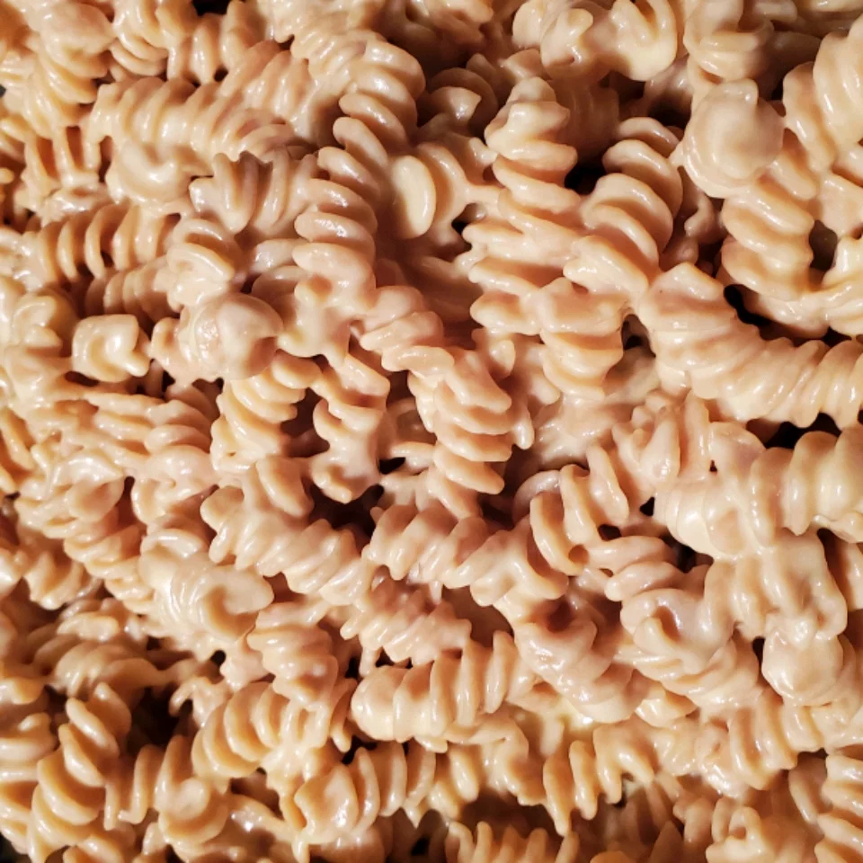

Simple Macaroni and Cheese

Ingredients
- 1(8 ounce) box elbow macaroni
- 1/4 Cup Butter
- 1/4 Cup All-Purpose Flour
- 1/2 Teaspoon Salt
- ground black pepper to taste
- 2 cups milk
- 2 cups shredded Ceddar Cheese
Directions
- Bring a large pot of lightly salted water to a boil. Cook elbow macaroni in the boiling water, stirring occasionally until cooked through but firm to the bite, 8 minutes. Drain.
- Melt butter in a saucepan over medium heat; stir in flour, salt, and pepper until smooth, about 5 minutes. Slowly pour milk into butter-flour mixture while continuously stirring until mixture is smooth and bubbling, about 5 minutes. Add Cheddar cheese to milk mixture and stir until cheese is melted, 2 to 4 minutes.
- Fold macaroni into cheese sauce until coated.